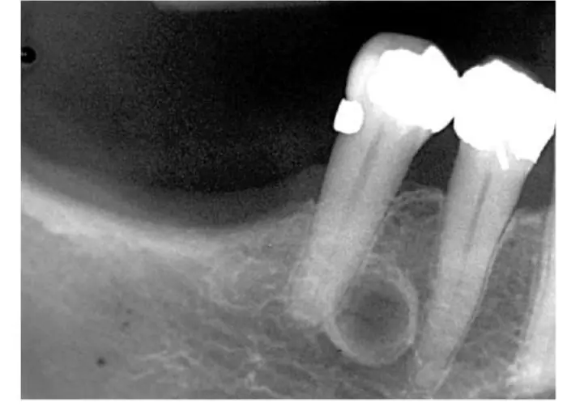

نسخه استخراجشده؛ ترجمه یا تأیید علمی انجام نشده است. وضعیت: captured
پیش از مرور، پنج موجودیت باقیمانده — هر کدام با یک نشانهی جداکننده که باید حفظ کنی.

۱) کیست بیفورکیشن باکال (BBC). از بقایای مالاسه در بیفورکیشن دندان چندریشه. اپیسنتر همیشه باکال به بیفورکیشن مولر درگیر. شایعتر با مولر اول دائمی مندیبل، و پالپ دندان وایتال است.
و نشانهی جداکنندهاش، منحصربهفردترین یافتهی این یونیت است: ریشههای مولر به سمت کورتکس لینگوال کج میشوند و سطح اکلوزال به سمت باکال میچرخد — به همین دلیل کاسپهای لینگوال بالاتر از باکال دیده میشوند. بهترین تصویر تشخیصی، اکلوزال مقطعی مندیبل است. سن بروز دو دههی اول، درمان کورتاژ محافظهکارانه بدون کشیدن دندان، و عود نمیکند.
۲) کیست لترال پریودنتال. از بقایای مالاسه در فضای PDL کنار سطح ریشه. محل: ناحیهی انسیزور و پرمولر مندیبل؛ در ماگزیلا لترال و کانین. کوچک، رادیولوسنت، با حاشیهی واضح و کورتیکه. واریانت خوشهایاش کیست بوتریوئید نام دارد. کیست لترال پریودنتال تشخیص با حذف است، و میتواند لامینا دورای ریشهی مجاور را محو کند.
۳) کیست ادنتوژنیک غدد بزاقی (glandular). نادر، با سلولهای موکوسساز، شایعتر در مندیبل قدامی، اغلب مولتیلوکولار و شبیه آملوبلاستوما. رفتار تهاجمی با عود بالا؛ به همین دلیل ممکن است رزکشن لازم شود.
۴) کیست ادنتوژنیک کلسیفیه (COC / کیست گورلین). نشانهی جداکنندهاش کلسیفیکاسیون داخلی است: لکههای سفید یا سنگریزههای صاف کوچک، و گاهی تودههای آمورف بزرگتر. حدود ۷۵٪ مزیال به مولر اول. در ۲۰ تا ۵۰٪ موارد با دندان نهفته — بیشتر کانین — همراه است. اگر کلسیفیکاسیون دیده نشود، از دنتیجروس و OKC قابل تفکیک نیست.
۵) کیست مجرای نازوپالاتین. تنها کیست غیرادنتوژنیک شایع؛ در خط وسط ماگزیلا در ناحیهی کانال یا فورامن انسیزیو. میتواند نامتقارن به کام سخت یا ناحیهی لترال گسترش یابد.
و دو عددی که تصمیم میگیرند: بالای ۱۰ میلیمتر به کیست شک کن؛ و برای مرجع داخلی، پهنای افقی کانال را با پهنای مزیودیستال تاج سانترال ماگزیلا (حدود ۸ میلیمتر) مقایسه کن. و افتراقش از استئیت رارفاکتیو سانترال: در کیست نازوپالاتین فضای PDL دور همهی آپکسها یکنواخت است و لامینا دورا سرجایش؛ تست حیات پالپ هم کمک میکند.
حفرهی سادهی استخوانی (SBC). کیست واقعی نیست چون پوشش اپیتلیالی ندارد. نامهای قدیمی (هموراژیک، تروماتیک، ایدیوپاتیک، solitary) کنار گذاشته شدهاند، چون شواهدی از علت تروماتیک وجود ندارد. فرضیهی پذیرفتنیتر: اختلال هماهنگی میان تمایز استئوبلاست و فعالیت استئوکلاست در حین رشد استخوان.
اپیدمیولوژی: بیشتر در دو دههی اول، میانگین سنی حدود ۱۸ سال. تقریباً همیشه در مندیبل، شایعتر خلفی. وقتی همراه دیسپلازی سمنتو-اوسئوس باشد، میانگین سن به دههی پنجم میرود با غلبهی زنان ۴ به ۱.
و نشانهی جداکنندهی طلایی SBC: ضایعه لامینا دورا را حفظ میکند و مرز کورتیکال فولیکول دندان در حال تکامل را دستنخورده میگذارد — ویژگیای بسیار مشخصه. حاشیه بین ریشهها اسکالوپ صاف میشود و پالپ دندانها وایتال میماند.
و یک اشتباه رایج — سپتای کاذب: سپتاهای داخلی SBC واقعی نیستند؛ حاصل اسکالوپ عمیق حاشیه در سطح اندوستئال کورتکس باکال یا لینگوالاند که روی تصویر تخت شبیه سپتا دیده میشوند. و SBC میتواند خودبهخود ترمیم شود؛ استخوان نابالغ تازه ممکن است شبیه دیسپلازی فیبرو یا فیبروم سمنتو-اوسیفایه به نظر برسد.
فرورفتگی لینگوال مندیبل (نقص استافنه). نه حفره است نه پوشش اپیتلیالی دارد؛ یک فرورفتگی در سطح لینگوال مندیبل است و فقط بهخاطر شکل گرد یا بیضیاش شبهکیست طبقهبندی میشود. اوج بروز دههی چهارم و پنجم، یعنی در بزرگسالی پدید میآید و مادرزادی نیست. محتوایش میتواند عضله، چربی، لنفنود یا بافت غدهی بزاقی باشد.
و نشانهی جداکنندهاش: اپیسنتر واریانت خلفی پایینتر از کانال آلوئولار تحتانی و قدامی به ناچ آنتهگونیال است. شیوع واریانت خلفی ۰٫۱۰ تا ۰٫۴۸ درصد، ولی واریانت پرمولر بسیار نادرتر: ۰٫۰۰۹ درصد.
و حالا خلاصهی یونیت، برای مرور:
سؤالهای این مرور سختترند و بسیاری از آنها یک یافتهی تصویری میدهند و میپرسند کدام یک نشانه، دو تشخیص همشکل را از هم جدا میکند.